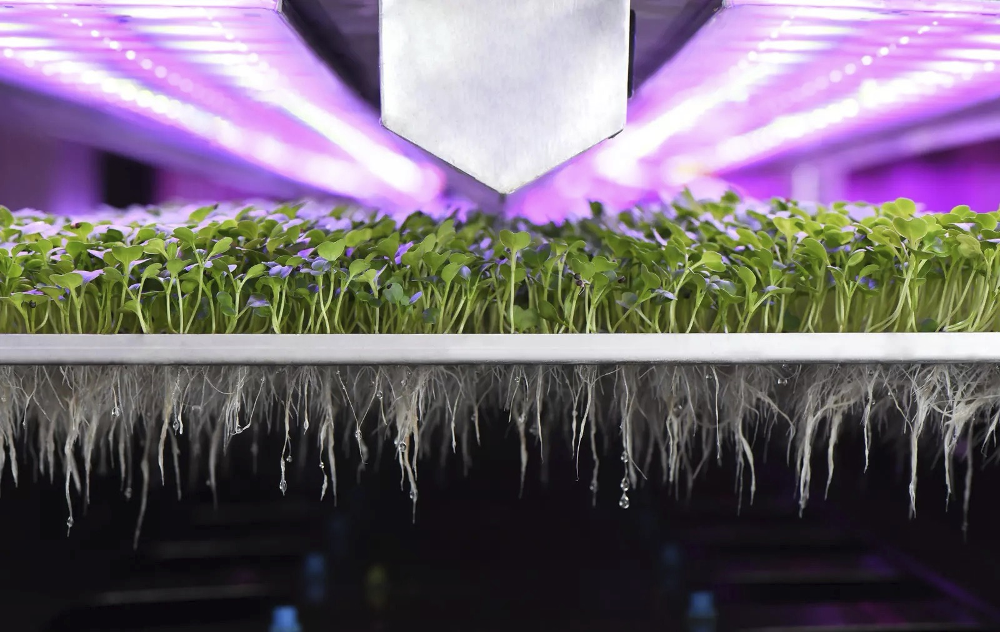
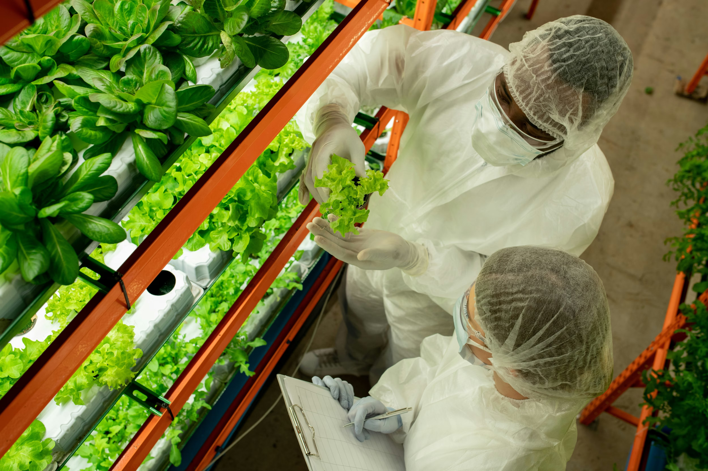
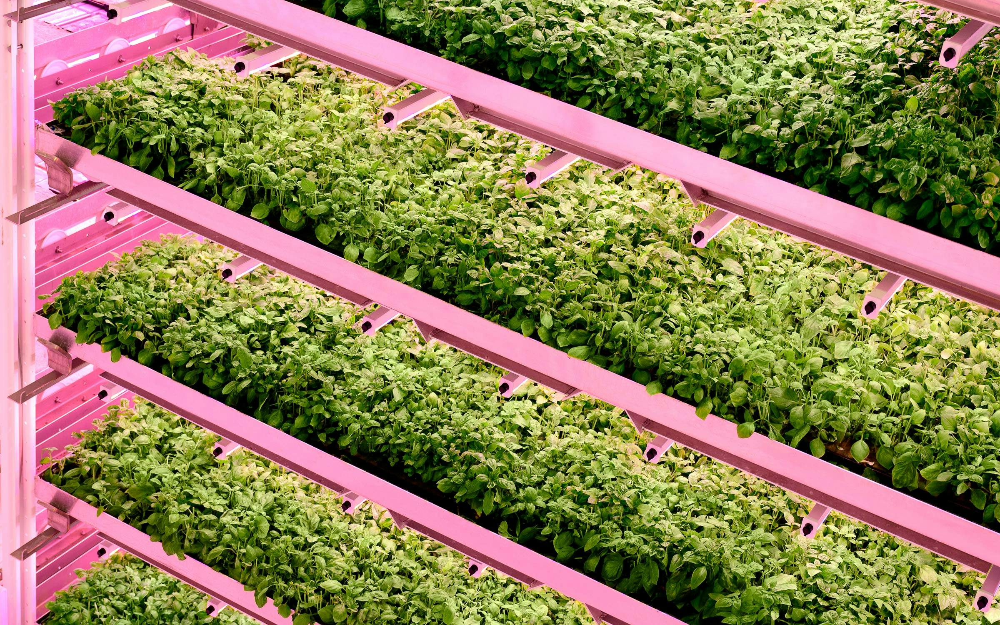

Vertical Farming Systems
According to a 2023 study in the journal Land by Dr. Yanhua Xie and their group of researchers, “if urban development [in the United States] continues at the same pace … , [then] by 2040 … 18 million acres of agricultural land [will have been] lost, fragmented, or compromised.” With the continued loss of arable farmland disrupting the food supply chain and contributing to environmental damages, developing alternative methods of sustainable food production has become increasingly critical — one such example being vertical farming systems, or VF systems for short. Vertical farming systems, although still quite new and limited in scope, hold great potential in meeting the food demands of a growing U.S. population while reducing environmental impact. As a partial solution to the loss of agricultural land due to urbanization, vertical farming systems consistently produce high-quality, nutrient-rich foods and decrease negative environmental impacts, but they are also quite limited in what they can produce, and require high amounts of energy to run. The term vertical farming system is quite ambiguous, however, there are many defining properties shared across systems. Professor of sustainable food systems Hanna Tuomisto defines vertical farming as, “indoor plant production in multiple vertical space-saving layers with the use of … LED lights.” In other words, vertical farming systems are made up of stacked rows of plant beds, typically grown without soil and using artificial light. These systems are commonly built inside of structures such as shipping containers, cellars, and repurposed buildings, which means that they can be placed virtually anywhere, even in populated urban areas.

Some of the major benefits of vertical farming, as stated by the US Department of Agriculture, include “meet[ing] growing global food demands in an environmentally responsible and sustainable way by … offer[ing] lower emissions, providing higher-nutrient produce, and drastically reducing water usage and runoff.” Other benefits include producing food year-round and having greater control over plant growth. In a 2020 research article from Sustainable Agriculture Research, Zitian Zhang asserted that “VF can … improve food security as it does not require arable soil…, can be immune to weather effects…, and can have multiple times … the grow-space of traditional farms.” Since the farms are indoors, they are protected from extreme weather conditions, disease, and many other problems that often plague agricultural fields, and crops can be grown year round. Vertical farms also maximize the amount of crops that can be produced, as the vertical layers allow for more space for crops to grow. This consistency provides the peace of mind that food demands will be met and the food produced will be of high quality. Vertical farms also allow for control over the nutrient-levels of the crops. As stated by van Delden, controlling photochemical levels through VF can improve taste and aroma, appearance, shelf life, and pharmaceutical value of the crops. One of the primary methods of controlling quality is through lighting. van Delden found that increasing light intensities induced the production of nutrients like vitamin C. The color of the light also has an effect, as they also found that red and blue lights increased different nutrient levels than green lights. In this way, VF can produce crops that are more nutrient-rich, last longer, and taste better. One of the most exciting advantages of VF systems is their reduced environmental impact. The closed and controlled nature of VF systems limits the emissions they release and allows for nutrients to be reused. This, as well as the elimination of soil, fertilizers, and pesticides reduces the damage of erosion and runoff. Perhaps most substantially, vertical farms significantly reduce the pressure on water resources, as water can be recycled inside the system. van Delden writes that VF systems “reduce water use by ~90% compared with greenhouses and by ~99% compared with the open field.” Vertical farms also take up less space, which reduces their land-use requirement. As stated by Tuomisto, VF systems “reduce the pressure to convert forests into additional agricultural land,” which protects habitats and their biodiversity, as well as carbon-sequestering plant life.

The primary problems currently presented by vertical farming systems are their limited application and high energy requirement. Vertical farms are not ideal for every type of produce, and there are currently limits on what can be grown sufficiently and cost-effectively. VF systems are only economically suitable for producing high-value crops, such as leafy vegetables, herbs, and berries, which do not make up many necessary staple foods. This does not mean that vertical farms' role in meeting food demands is insignificant, but rather that VFs as they are currently cannot serve as a complete alternative for adequate crop production. Since VF systems utilize artificial lighting as well as heating, cooling, and other monitoring mechanisms, they require a great deal of energy to operate. This is a big issue. High energy consumption places a great strain on the environment, especially when that energy comes from non-renewable sources such as fossil fuels, which emit large amounts of greenhouse gasses. However, as found by Tuomisto, the amount of GHGs released by vertical farms can be significantly reduced through the use of wind energy as opposed to coal, and energy efficiency “could be improved through the development of LED light technologies and optimization of their use.” Vertical farming systems, although still quite new and limited in scope, hold great potential in meeting the food demands of a growing U.S. population while reducing environmental impact. Vertical farming systems consistently produce high-quality, nutrient-rich foods and decrease negative environmental impacts, but they are also quite limited in what can be produced, and require high amounts of energy to run. Vertical farming systems are not a perfect technology, and there is much to be improved upon. Urbanization and climate change present big issues that need to be seriously addressed, and VFs can’t fix them alone. However, vertical farming has the potential to do a lot of good by helping meet our nation’s food demands sustainably, and it stands to reason that expanding on technologies such as this can have a big impact on our environment.
